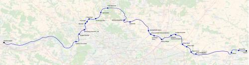

Tangentielle Val-d'Oise
Tangentielle Val-d'Oise
Mantes-la-Jolie, Conflans - Claye-Souilly, Meaux
Une nouvelle tangentielle pour le réseau Île-de-France
La tangentielle Val d'Oise permettra d'assurer un liaison entre Mantes-la-Jolie, Pontoise et Roissy. En partant de Mantes, les trains pourront emprunter l'une des deux lignes qui remontent la vallée de la Seine pour arriver à Conflans-Fin-d'Oise puis à Eragny - Neuville. Le tracé emprunterait ensuite le raccordement de Saint-Ouen-l'Aumône sur lequel une une gare serait créée pour desservir la zone d'activité. Un saut de mouton devra être aménagé pour le croisement avec la ligne de Saint-Denis à Dieppe pour atteindre Epluches.
Le trajet utilisera ensuite la ligne de Pontoise à Creil jusqu'à Parmain et une nouvelle ligne à travers la forêt de l'Isle-Adam permettra d'atteindre Presles pour ensuite rejoindre Monsoult-Mafliers.
À partir de Presles le tracé est partagé avec la tangentielle Seine-et-Marne et passe par Attainville, l'aéroport de Roissy et la gare de Claye-Souilly - Est qui sera le terminus de certaines missions. Ensuite le tracé est commun avec le RER G jusqu'à Meaux et Trilport.
La tangentielle Val-d'Oise ouvre la possibilité de créer des liaisons TER Normandie - Roissy et de faire de la gare d'Epluches une gare grande lignes (TER et TGV) pour la desserte de l'agglomération de Cergy - Pontoise à laquelle elle sera reliée par la ligne 2 du Cergyval.
Carte

Cliquer pour agrandir
Stations
Si ce projet vous intéresse n'hésitez pas à le (re-)partagez sur les réseaux sociaux ou par courriel ou à en parler autour de vous.
Si vous souhaitez travailler à la concrétisation de ce projet, passez à l'action et contactez nous.
Commenter